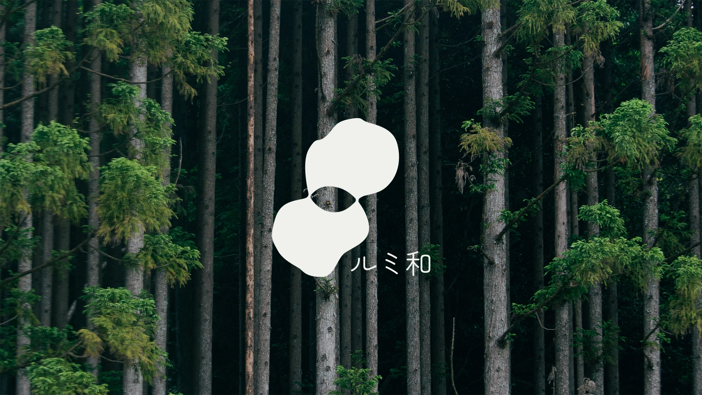

The design brief aims to create a lighting brand product for the newly renovated accommondation in Keihoku managed by ROOTS.
Keihoku is rich in natural resources, with timber and agriculture at its core. Renowned since ancient times for exceptional wood, Keihoku continues to connect people with nature, building bridges from roots to branches, forest to community.
